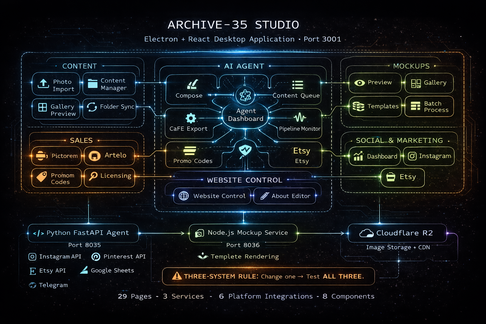

The need: The website alone isn’t enough. Managing a photography business means content ingestion, mockup generation, social media posting, sales tracking, gallery submissions, website control, and AI-powered content creation. All from one place.
What I built: A full desktop application with 29 pages organised into 6 clusters: Content management (import, gallery, sync), Mockups (preview, templates, batch processing), Sales (Pictorem, Artelo, promo codes, licensing), Social & Marketing (Instagram, Pinterest, Etsy integrations), an AI Agent system (dashboard, compose, content queue, pipeline monitor, health panel, CaFÉ export), and Website Control (live control panel, about editor, analytics).
The infrastructure: Three interconnected services that share data. The Electron Studio app on port 3001. A Python FastAPI agent on port 8035 handling Instagram, Pinterest, Etsy, Google Sheets, and Telegram integrations. A Node.js mockup service on port 8036 for template rendering. The three-system rule: change one, test all three.
Why it matters: This is the most complex thing I’ve built. 29 pages, 3 services, 6 platform integrations, all communicating. The architecture came from my engineering brain — in the macro world it works one way, in the micro world of code, the same principles apply.